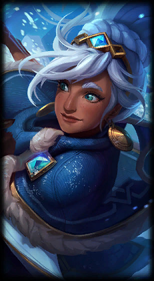
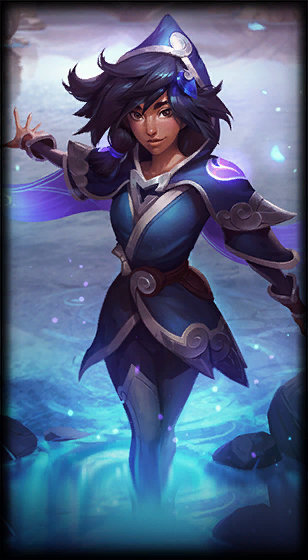
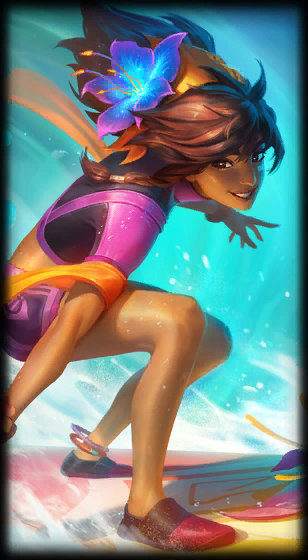
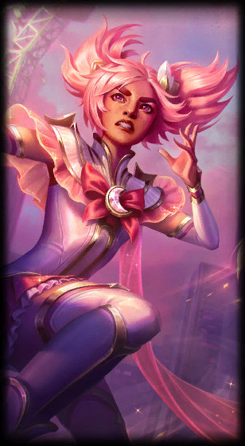
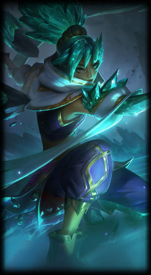
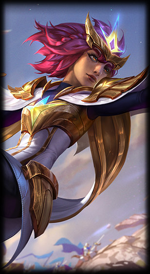

Taliyah
Taliyah

Freljord Taliyah

SSG Taliyah

Pool Party Taliyah

Star Guardian Taliyah

Crystalis Motus Taliyah

Durands Legacy Taliyah
Taliyah is a nomadic mage from Shurima, torn between teenage wonder and adult responsibility. She has crossed nearly all of Valoran on a journey to learn the true nature of her growing powers, though more recently she has returned to protect her tribe...